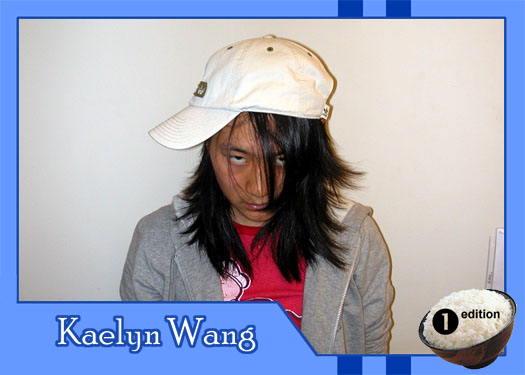

|
Why did you get involved with Theatre Rice? theater is the kewlest thing on the block. i wanted to meet new people. it keeps me from doing insignificant things... like homework What do you hope to gain from TR? dagnabit, i wanna be better at improv! What do you like to do in your spare time watch movies, gym, think of something to do in my spare time What are your favorite films or t.v. shows? will and grace, moulin rouge If you had a quote that defines how you live life, what would it be? "you're a freak" |